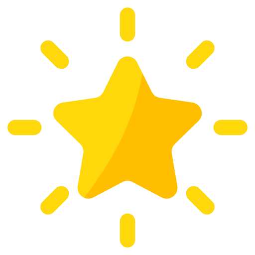
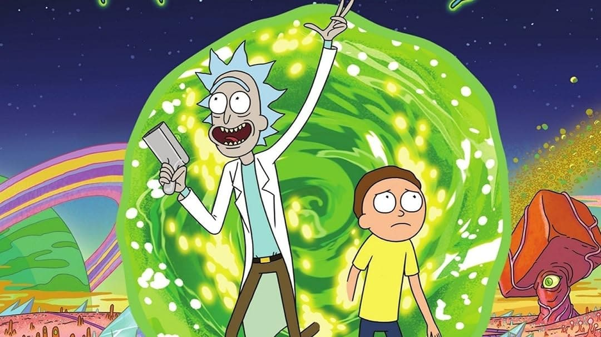

Música
La siguiente lista es acerca de mis 10 canciones favoritas actuales, no hay un orden en específico solo son las mejores que tengo ahora mismo.
- Chihiro - Billie Eilish
- Hypnotic data - Odetari
- Wildflower - Billie Eilish
- Born to die - Lana del Rey
- NDA - Billie Eilish
- FE!N - Travis Scott
- Les - Childish Gambino
- Sad Girl - Lana del Rey
- Daddy issues - The Neighbourhood
- KEEP UP - Odetari 
Famosos
Tengo una pequeña lista de famosos que son mis favoritos, la gran mayoría son streamer/youtuber y otros tantos actores, me agradan por su actuacion, por su contenido o simplemente por que son mis celebrity crush :)
- El Rubius
- El Mariana
- Josh Hucherson <3
Rubén Doblas Gundersen, más conocido como el Rubius, es un youtuber, streamer e influencer hispanonoruego, reconocido por sus videos de entretenimiento basados en gameplays, sketches, parodias, montajes y videoblogs. Con más de 800 vídeos subidos, 9 mil millones de visualizaciones y 40 millones de suscriptores, fue el mayor usuario de YouTube en España hasta 2023,y estuvo entre los 50 canales con más suscriptores de la plataforma en el mundo durante 2013 y 2021. En Twitch es el tercer usuario con más seguidores del mundo, con 14 millones.
En 2016 la revista Time lo incluyó en su lista de «líderes de la próxima generación» y lo nombró un «conquistador online». En 2018 obtuvo el récord mundial de espectadores en vivo durante una transmisión en línea de YouTube, por un torneo presencial del videojuego Fortnite.
Osvaldo Palacios Flores, mejor conocido como El Mariana, es un streamer, youtuber y tiktoker mexicano. Se dedica a gameplays y a retos. Su popularidad aumentó cuando en la plataforma de TikTok se viralizaron varios clips de sus directos jugando el videojuego Call of Duty: Warzone.
Ha tenido pequeños lapsos de inactividad en su canal, pero actualmente tiene un horario fijo de lunes a viernes empezando desde las 21:30 (GMT-5) aproximadamente, siendo los viernes mayormente llamados "viernes de terror", ya que ese día busca que el directo tenga una temática de juegos, charlas o actividades de terror. Estuvo nominado como "Streamer Relevación 2021" en los Premios ESLAND del 2022, organizados por TheGrefg, perdiéndolo ante Elxokas, pero quedando en segunda posición con un 28,69% de los votos
Joshua Ryan Hutcherson es un actor estadounidense. Comenzó a actuar a principios de la década de 2000 y apareció en varios comerciales y papeles menores en cine y televisión antes de ganar prominencia en su adolescencia con papeles principales en Little Manhattan y Zathura: A Space Adventure (ambas de 2005), RV (2006), Bridge to Terabithia (2007), Journey to the Center of the Earth (2008) y The Kids Are All Right (2010).
En 2011, Hutcherson, de 18 años, consiguió el papel principal de Peeta Mellark en la serie de películas de gran éxito Los juegos del hambre, estrenada anualmente entre 2012 y 2015, por la que ganó tres premios MTV Movie Awards y un premio People's Choice Award . En el mismo período, también desempeñó un papel principal en Viaje al pasado 2: La isla misteriosa (2012) y un papel de voz en la película animada Epic (2013). Desde entonces, Hutcherson ha disminuido su carga de trabajo durante unos años y ha aparecido en varias películas independientes. En televisión, protagonizó la serie de comedia Future Man de Hulu de 2017 a 2020 y prestó su voz al personaje principal de Ultraman (2019-2023). Desde entonces, ha protagonizado la película de terror de éxito comercial Five Nights at Freddy's (2023) y la película de acción The Beekeeper (2024).
A lo largo de su carrera, Hutcherson ha mostrado interés por el cine. Ha sido productor ejecutivo de Detention (2011), The Forger (2012) y Escobar: Paradise Lost (2015), además de desempeñar un papel principal en cada película.
Artistas
Actualmente tengo dos artistas favoritas, por ende se merecen un pequeño espacio aqui, junto con sus albums y algunas canciones que me gustan de cada uno de ellos.
- Billie Eilish
- Album When We All Fall Asleep, Where Do We Go? - 2019
- Xanny
- My Strange Addiction
- Ilomilo
- Listen Before I Go
- I Love You
- Album Happier Than Ever - 2021
- I Didn't Change My Number
- Halley's Comet
- NDA
- Therefore I Am
- Happier Than Ever
- Album Hit Me Hard and Soft - 2024
- Chihiro
- Birds of a Feather
- Windflower
- The Diner
- Bittersuiter
- Album When We All Fall Asleep, Where Do We Go? - 2019
- Lana del Rey
- Album Born to die - 2012
- Born to die
- Video Games
- Radio
- Summertiemes Sadness
- This Is What Makes Us Girls
- Album Paradise -2012
- Gods & Monsters
- Cola
- Ride
- Blue Velvet
- Album Ultraviolence - 2013
- Ultraviolence
- Sad Girl
- Black Beauty
- Pretty When You Cry
- Shades Of Cool
- Album Honeymoon - 2015
- Honeymoon
- Radio
- Art Deco
- Salvatore
- The Blackest Day
- Album Did you know that there's a tunnel under Ocean Blvd - 2023
- A&W
- Paris, Texas
- Let The Light In
- Margaret
- Peppers
- Album Born to die - 2012
Series y animes favoritos
- Rick And Morty 
- Rick Sánchez es el estereotipo del «científico loco». Es un genio y buen tipo, pero es irresponsable, poco arreglado, alcohólico, egoísta, depresivo, sarcástico y con poca cordura. Rick por no poder pagar la renta de su antigua casa termina mudándose a la casa de su hija Beth y en ese momento se encuentra con su nieto Morty; un joven de 14 años sin expresión, tímido y no muy listo. Al juntarse con su nieto, Rick y Morty viven una variedad de aventuras a lo largo de universos paralelos. Y es mediante tantas vivencias y reflexiones que Rick busca que su nieto Morty no acabe como su padre, Jerry, un hombre muy poco exitoso que a pesar de tener buenas intenciones resulta ser bastante inútil en muchas ocasiones y depende mucho de su esposa, Beth.
- Future Man
- Future Man es una serie de televisión estadounidense de comedia que se estrenó el 14 de noviembre de 2017 en la plataforma de streaming Hulu.1 Sigue al limpiador de un laboratorio que está llamado a salvar el mundo. Es protagonizada por Josh Hutcherson, Eliza Coupe, Derek Wilson, Ed Begley Jr. y Glenne Headly, siendo los productores ejecutivos Seth Rogen y Evan Goldberg.
- Shingeki No kyojin
- Shingeki no Kyojin también conocida en países de habla hispana como Ataque a los titanes y Ataque de los titanes, es una serie de manga japonesa escrita e ilustrada por Hajime Isayama. El manga se publicó en septiembre de 2009 en la revista Bessatsu Shōnen Magazine de la editorial Kōdansha y fue difundida de forma mensual hasta abril de 2021 con un total de 139 capítulos. Su historia terminó después de casi doce años. El manga es distribuido en España por Norma Editorial, en Argentina por Ovni Press y en el resto de Hispanoamérica por Panini.
- Jujutsu Kaisen
- Jujutsu Kaisen, también conocida como Jujutsu Kaisen: Guerra de hechiceros en Japón, es una serie de manga japonés escrita e ilustrada por Gege Akutami. Shūeisha pública sus capítulos en la revista Shūkan Shōnen Jump desde el 5 de marzo de 2018 y los ha recopilado y publicado en veintiocho volúmenes tankōbon a mediados de 2024. La historia gira en torno al estudiante Yūji Itadori, quien se une a una organización secreta de hechiceros para matar a una poderosa maldición llamada Ryōmen Sukuna tras convertirse en su anfitrión. Es una secuela de Tokyo Metropolitan Curse Technical School, del mismo Akutami, que Shūeisha publicó en la revista Jump GIGA entre el 28 de abril y el 28 de julio de 2017 y posteriormente recopiló en un volumen tankōbon bajo el título Jujutsu Kaisen 0, publicado el 4 de diciembre de 2018.
- Chainsaw Man
- Chainsaw Man es una serie de manga japonés escrita e ilustrada por Tatsuki Fujimoto. La primera parte fue serializada en la revista Shūkan Shōnen Jump de Shūeisha desde el 3 de diciembre de 2018 hasta el 14 de diciembre de 2020; una segunda parte se publica en la revista en línea Shōnen Jump+ desde el 13 de julio de 2022. Hasta el momento sus capítulos se han recopilado en dieciocho volúmenes tankōbon. En América del Norte, el manga tiene licencia en inglés de VIZ Media, tanto para publicación impresa como digital, y también está publicado por Shūeisha en la plataforma en línea Manga Plus.
- The Last of Us
- The Last of Us es una serie de televisión estadounidense postapocalíptica que se estrenó el 15 de enero de 2023 a través de HBO. Basada en el videojuego de 2013 del mismo nombre desarrollado por Naughty Dog. La serie sigue a Joel (Pedro Pascal), un contrabandista encargado de escoltar a la adolescente Ellie (Bella Ramsey) a través de un Estados Unidos postapocalíptico. También cuenta con Tommy (Gabriel Luna), el hermano menor de Joel y exsoldado.
- Primal
- Primal es una serie animada de televisión para adultos franco-estadounidense creada y dirigida por Genndy Tartakovsky que se estrenó el 7 de octubre de 2019 en Adult Swim. Primal sigue a un hombre de las cavernas llamado Spear, un cazador formidable en los albores de la evolución, y una tiranosaurio llamada Fang al borde de la extinción, reunidos por la tragedia en una asociación poco probable mientras luchan por sobrevivir a las criaturas violentas que también viven en el mundo prehistórico.